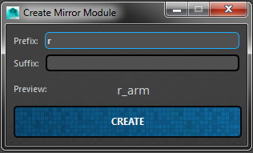

Module Base Class¶
Author: Jeremy Ernst
This is the base class from which all modules are created. When creating a new module, your module class should inherit from this base class. Example:
In the __init__ of your module class, you will want to also run the base class __init__ at the end of your module class __init__:
This module has two file attributes set by default. Your module class will need many more file attributes set. Please see another module as an example.
Contents¶
Class¶
-
class
System.ART_RigModule.ART_RigModule(moduleName, moduleType, userCreatedName)[source]¶ -
__init__(moduleName, moduleType, userCreatedName)[source]¶ Initiate the class, taking in the instance to the interface and the user specified name.
Parameters: - moduleName – This is the base name of the module, specified in the rig module.
- moduleType – This is the name of the module to create (the module class).
- userCreatedName – This is the name specified by the user on module creation.
- Instantiate the following class variables as well:
- self.modName: Take the passed in moduleName and make it a class var
- self.moduleType: Take the passed in moduleType and make it a class var
- self.rootMod: The network node of the entire character asset
- self.name: The user created name (prefix + baseName + suffix) passed in
- self.originalName: Also the user created name, but we want to store what the original name was on creation, as the user can rename the module later. This will allow us to make the link between what the module’s original name was and what the new name is.
- self.outlinerControls: A list of the outliner controls created when adding module joint movers to the outliner.
Also, read the QSettings to find out where needed paths are.
-
aimMode(state)[source]¶ This method toggles the aim mode state if the module can have aim mode.
It then calls on each derived module’s aimMode_Setup which defines how to setup aim mode for the module.
-
bakeOffsets()[source]¶ This method bakes any transforms on the offset movers up to the global movers, and then zeroes out the offset movers.
-
buildNetwork()[source]¶ Build the network node for the module which will store all information needed by the module. Then, call on addAttributes to add the required module attributes to the network node.
-
buildRig(textEdit, uiInst)[source]¶ This method starts building the rig for a module. It will then call on buildRigCustom, which is implemented in each derived module class as an override function.
Parameters: - textEdit – The text edit in the buildProgressUI that we output information to.
- uiInst – passed in instance of the buildProgressUI
-
buildRigCustom(textEdit, uiInst)[source]¶ This method is what truly builds the rig for each module. It is implemented in the derived module class.
Parameters: - textEdit – The text edit in the buildProgressUI that we output information to.
- uiInst – passed in instance of the buildProgressUI
-
changeModuleName(baseName, moduleInst, rigUiInst)[source]¶ Launch the interface that allows users to change the module name.
Parameters: - baseName – The module base name (head, torso, leg, etc)
- moduleInst – The specific instance of the module
- rigUiInst – The instance of the rig creator interface.
This will call on a separate class in Core/Interfaces called ART_ChangeModuleNameUI.py
-
changeModuleParent(moduleInst, rigUiInst)[source]¶ Launch the interface that allows users to change the module’s parent bone.
Parameters: - moduleInst – The specific instance of the module
- rigUiInst – The instance of the rig creator interface.
This will call on a separate class in Core/Interfaces called ART_ChangeModuleParentUI.py
-
checkForDependencies()[source]¶ This method will check modules for any attached modules or children modules.
This method is generally called when deleting a module or when changing a module name so that any connected modules are updated accordingly.
Returns: attached modules
-
cleanUpRigPose()[source]¶ This method hides the joint movers and unconstrains the joints from the movers after setting a rig pose.
-
copySettings()[source]¶ Copy the values from the network node of the module and store them in a temp file on disk.
This function is used in the right-click menu of the module on the skeleton settings interface. Occasionally, it is called outside of the menu. For example, when creating a mirror of the module, the settings are copied for the source module to then be later pasted on the mirror.
-
createContextMenu(point)[source]¶ Create the right-click menu for the module.
Parameters: point – Point on monitor to spawn the right-click menu. - Default menu actions created:
- Copy Settings
- Paste Settings
- Reset Settings
- Delete Module
- Create Mirror of this Module
- Mirror Transformations (only if a mirror is linked)
-
createGlobalMoverButton(name, parent, uiInstance)[source]¶ Create the button in the outliner for the global mover control of a joint mover.
Parameters: - name – The name of the joint mover control.
- parent – The outliner widget the created button will be parented to.
- uiInstance – The Rig Creator interface instance.
-
createMeshMoverButton(name, parent, uiInstance)[source]¶ Create the button in the outliner for the geometry mover control of a joint mover.
Parameters: - name – The name of the joint mover control.
- parent – The outliner widget the created button will be parented to.
- uiInstance – The Rig Creator interface instance.
Note: The geometry mover is purely for aesthetics and does not affect the rigging.
-
createMirrorModule()[source]¶ This method creates the mirror of a module and is called from createMirrorOfModule_UI.
To create the mirror of a module, after a few checks are done, a module of the same type is created first. If that module type has a left/right version of a joint mover file, the opposite version is brought in. All the normal steps of module creation are then gone through and lastly, mirrorTransformations is called.
-
createMirrorOfModule_UI()[source]¶ This method builds the interface for creating a mirror of a module.

-
createOffsetMoverButton(name, parent, uiInstance)[source]¶ Create the button in the outliner for the offset mover control of a joint mover.
Parameters: - name – The name of the joint mover control.
- parent – The outliner widget the created button will be parented to.
- uiInstance – The Rig Creator interface instance.
-
createRigPoseSliderForJoint(joint)[source]¶ This method creates the rig pose slider widget for the given joint. (This shows up in the advanced section of the rig pose UI)
Parameters: joint – The joint that the slider will control.
-
createScriptJob()[source]¶ Create the selection script job for the outliner buttons and their associated joint mover controls.
This function purely creates the script job. The script job function that is run is called self.selectScriptJob.
-
deleteModule()[source]¶ Delete the module and all associated nodes and interfaces.
First, this will delete the joint mover, remove the entry from the outliner and the skeleton settings UI. Then, it has to deal with any connected modules or mirror modules and resolve any issues there.
-
getAllModules¶ This method finds all connected rig modules to the main character network node.
Returns: returns a list of the rig modules
-
getControls()[source]¶ This method returns a list of all the rig controls of the module.
Returns: List of all rig controls in the module.
-
getModules¶ This method finds the main “character” module that has connections to all of the rig modules
Returns: returns the character node.
-
getReferencePose(poseType, zeroPose=True)[source]¶ This method gets the model pose or the rig pose (depending on poseType) and stores that data for the movers.
Parameters: - poseType – Whether or not to get the model pose or rig pose.
- zeroPose – Whether or not the default rig pose should be set to zeroed rotations.
-
importFBX(importMethod, character)[source]¶ This method is implemented in the derived module class and defines how mocap is imported onto the rig controls.
Parameters: - importMethod – Whether or not the FBX is getting imported as FK, IK, Both, or None
- character – The namespace of the rig.
-
importFBX_pre(importMethod, character)[source]¶ This method runs before an fbx is imported onto the control rig. It cuts any keys on the controls and zeroes the controls out before importing the fbx (which is called in the derived module class)
Parameters: - importMethod – Whether or not the FBX is getting imported as FK, IK, Both, or None
- character – The namespace of the rig.
-
jointMover_Build(path)[source]¶ Import the joint mover file with the given path.
After importing the module’s joint mover file, rename imported nodes to use module name. Then, assign existing matching materials to joint mover proxy geometry, deleting the imported materials if they were duplicates. Then parent into the main JointMover group. Lastly, hook up global scaling on the joint movers.
Parameters: path – Path of joint mover file to import
-
mirrorTransformations()[source]¶ This method mirrors transformations for the module’s mirror module.
-
mirrorTransformations_RigPose()[source]¶ This method is used when creating rig poses for modules. If a module has a mirror, this method will mirror the rig pose transformations to that mirror module.
-
pasteSettings()[source]¶ Paste the settings from the temp file on disk to the module’s network node.
This function is used in the right-click menu of the module on the skeleton settings interface. Occasionally, it is called outside of the menu. For example, when creating a mirror of the module, the settings are copied for the source module to then be later pasted on the mirror.
After settings are pasted, applyModuleChanges is called to update the joint mover in the scene with the latest values. updateSettingsUI is also called to update the outliner.
-
removeSkeletalConstraints()[source]¶ This method removes any constraints on the joints. This tends to get called by removing rigging.
-
resetRigControls(resetAll)[source]¶ This method zeroes out control attributes. If resetAll is true, then it will zero out all rig controls for the module. Otherwise, it will only zero out the selected controls of the module.
Parameters: resetAll – Whether or not to reset only the selected controls or all controls of the module.
-
resetRigPose()[source]¶ This method resets the module rig pose to be the default (zeroed rotations).
-
resetRigPose_Part(part)[source]¶ This method resets the given joint (part) rig pose to be zeroed rotations. This is for the part slider on the rig pose UI in the advanced section.
Parameters: part – The given joint name slider.
-
resetSettings()[source]¶ Reset the settings of the module’s network node.
This function is used in the right-click menu of the module on the skeleton settings interface. Occasionally, it is called outside of the menu.
After settings are reset, applyModuleChanges is called to update the joint mover in the scene with the latest values. updateSettingsUI is also called to update the outliner.
-
resetTransforms(translate, rotate, scale, name)[source]¶ Reset the given attributes of all movers in the module.
Parameters: - translate – Boolean of whether or not to reset translation values.
- rotate – Boolean of whether or not to reset the rotation values.
- scale – Boolean of whether or not to reset the scale values.
- name – The module name. (prefix + basename + suffix)
This function is mainly called from ART_ResetModeUI.
-
returnClassObject¶
-
returnCreatedJoints¶ This method loops through the Created Bones attribute on its network node and returns a list of the joints it will create given the current module settings.
Returns: A list of the created bones of the module.
-
returnJointMovers¶ This method finds and returns all joint movers for the module.
Returns: a list of all global movers, offset movers, and geo movers for the module.
-
returnMirrorModuleInst¶ This method finds and returns the instance of a module’s mirror module.
Returns: a pointer in memory to the instance of the mirror module.
-
returnNetworkNode¶ This method returns the module’s own network node.
Returns: the modules network node
-
returnPrefixSuffix¶ This method splits our module name by the base name and returns the prefix and suffix.
Returns: the user-defined prefix and suffix found by splitting the module name by the base name.
-
returnRigNetworkNode¶ This method returns the module’s own network node using the namespace on the main character network node. This is so that if there are multiple characters in a scene, we know which network node for which character we are trying to return.
Returns: returns this module’s network node in a scene with references.
-
rigPose_UI(parentWidget)[source]¶ This method creates the UI widget that gets parented into the publish UI that handles rig pose creation.
A slider gets created for the overall module that goes from current pose to ideal rig pose. Then a slider gets created for each joint in the module to allow for finer control over the rig pose creation.
Parameters: parentWidget – the widget the rig pose UI (QFrame) will get parented to
-
selectMover(part, globalMover, offsetMover, geoMover, button)[source]¶ Select the appropriate joint mover control based on the args passed in. Color the associated button white to show selection status.
Parameters: - part – The name of the joint mover control.
- globalMover – Boolean of whether or not given control is a global mover.
- offsetMover – Boolean of whether or not given control is an offset mover.
- geoMover – Boolean of whether or not given control is a mesh mover.
- button – The button in the outliner associated with the given mover.
-
selectRigControls()[source]¶ This method calls on getControls to return a list of the controls and the selects them.
-
selectScriptJob(info)[source]¶ Change icon color of the given joint mover’s button in the outliner to show selection status.
Parameters: info – This list contains the button object, the joint mover control, and the original color icon. If the control given is selected, the icon is switched to a white icon. If it is not selected, the icon is set back to the original passed in icon.
-
selectionScriptJob_animUI(buttonData)[source]¶ This method is called from a scriptjob anytime a selection is changed. It’s sole purpose it to update the button color on the anim picker to show if a control is selected or not.
Parameters: buttonData – pairings of button/control/brush. brush is the original color of the button.
-
setMirrorModule(moduleInst, rigUiInst)[source]¶ Launch the interface that allows users to change the module’s mirror module. Meaning, the module that is linked as a mirror of this module. Only modules of the same type can be linked as mirrors.
Parameters: - moduleInst – The specific instance of the module
- rigUiInst – The instance of the rig creator interface.
This will call on a separate class in Core/Interfaces called ART_SetMirrorModuleUI.py
-
setPosePercentage(percent, part)[source]¶ This method takes the percent from setReferencePoseSlider, gets the values of the model pose and rig pose for the given part, then calls on setPosePercentage_Part to find and set the values on the mover that is the percentage between model and rig pose.
Example: If the model pose is a value of 10 and the rig pose is a value of 0, and the slider is at .5, then the value to set is 5. (But this is done and found per attribute)
Parameters: - percent – What percent of model and rig pose to set.
- part – What joint mover to set the values on.
-
setPosePercentage_Part(percent, mover, modelPoseData, rigPoseData, poseData, translate, rotate)[source]¶ This method takes the data from setPosePercentage and figures out what values to set on the given part (mover).
Example: If the model pose is a value of 10 and the rig pose is a value of 0, and the slider is at .5, then the value to set is 5. (But this is done and found per attribute)
Parameters: - percent – the percent value of the slider. What percentage of the model and rig pose to use.
- mover – the mover to set the values on.
- modelPoseData – all of the data for the model pose for this mover.
- rigPoseData – all of the data for the rig pose for this mover.
- poseData – a list which includes the mover and its translate and rotate values.
- translate – the translate values for the model pose
- rotate – the rotate values for the model pose
-
setReferencePose(poseType)[source]¶ This method gets the data for the given pose type (rig or model) and sets the movers with those values.
Parameters: poseType – Whether to set the model pose or the rig pose on the movers.
-
setReferencePoseSlider(part, *args)[source]¶ This method takes the slider value of a given part and then calls on setPosePercentage, which will then find the values of the model pose and the rig pose and figure out based on the slider percentage what values to set on the mover.
Parameters: - part – the joint mover which the slider is controlling.
- args – the values from the slider
-
setSkeletonPose(poseType)[source]¶ This method constrains the joints to the movers and then stores that pose data for those joints.
This could be the model pose or the rig pose.
Parameters: poseType – whether to set the model pose or rig pose for the joints.
-
setupForRigPose()[source]¶ This method unhides the movers and constrains the joints to the movers for creating the rig pose.
If the user wants to create a custom rig pose (instead of using the sliders), this method sets the module up for that functionality.
-
skeletonSettings_UI(name, width, height, checkable)[source]¶ Build the framework for the skeleton settings that all modules need.
Parameters: - name – user given name of module (prefix + base_name + suffix)
- width – width of the skeleton settings groupBox. 335 usually
- height – height of the skeleton settings groupBox.
- checkable – Whether or not the groupBox can be collapsed.
-
toggleShapeVis(transform, value)[source]¶ This method finds the shapes for the passed in transform and toggles the visibility based on the value.
Parameters: - transform – the transform to get the shape nodes from.
- value – whether to show or hide the shape nodes.
-
updateBoneCount()[source]¶ This method looks at the create bones attribute of the module and gets the number of bones in that list and appends it onto the total bone count for the bone counter interface.
-
updatePreview(baseName, *args)[source]¶ This simple method updates the module preview field(QLineEdit) with the entered prefix and suffix.
Parameters: baseName – base name of the module (example: arm)
-
updateRigPose(slider)[source]¶ This method updates what the stored rig pose is for a module. The default rig pose tends to be zeroed out rotations, but this function can essentially update what the max value on the rig pose slider sets the pose to.
Parameters: slider – The rig pose slider where the min is the current model pose and the max is the rig pose.
-